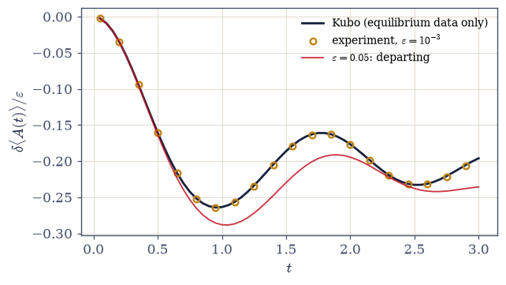
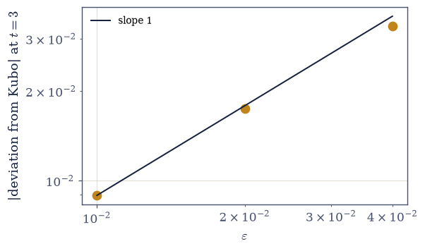
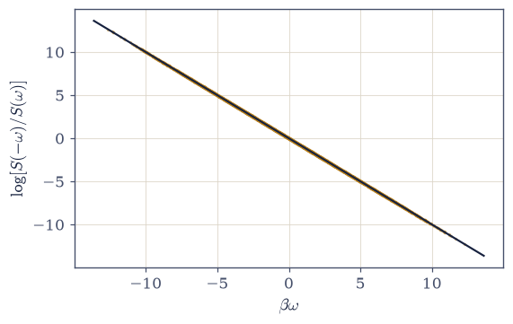
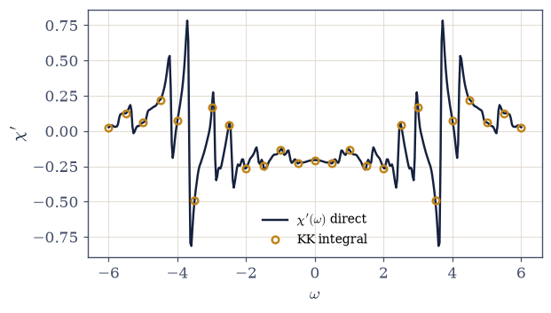
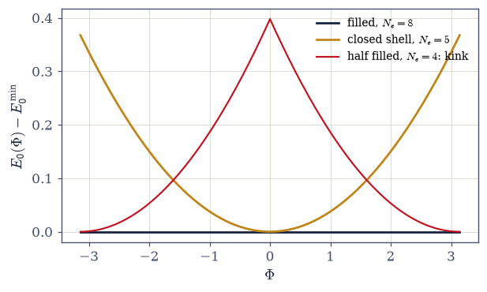
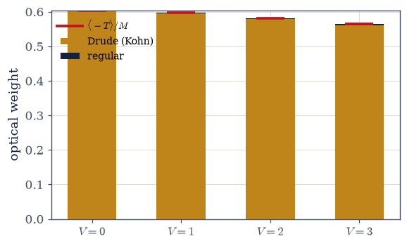
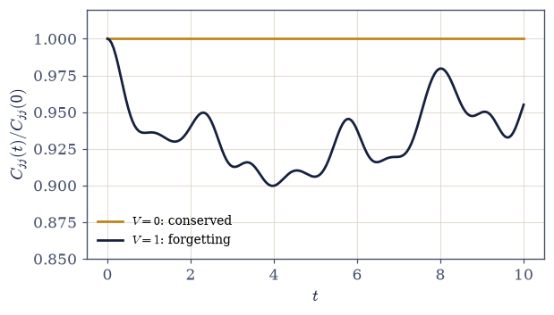

7.25 Linear Response and Kubo: How Equilibrium Answers Questions#
Notebook overview#
The Coda’s final notebook asks the question every laboratory asks and this volume never did: what happens when equilibrium is disturbed? Apply a field, pass a current, shine a light — and the deepest practical theorem in statistical mechanics answers that, to first order in the disturbance, the results were never new information. The response is assembled entirely from correlation functions the system already possessed in equilibrium. Equilibrium knows the answers to questions not yet asked.
A claim that large is not admired here; it is staged. On the chaotic spin chain of §7.22, a weak field is actually switched on at \(t = 0\), the thermal state is evolved exactly under the perturbed Hamiltonian, and the measured response is laid over the Kubo prediction built purely from unperturbed correlations. They agree at the expected residual — and then the notebook does what textbooks do not: it measures where linearity ends, watching the deviation double as the field doubles (the \(O(\varepsilon^2)\) correction made visible) until the strongest trace departs from the prediction before the reader’s eyes. Linear response is a regime with edges one can find, and the standing rule is issued: every linear-response number owes an \(\varepsilon\)-scan, exactly as every discretization owed an \(M\)-ladder in §7.21.
Around that centerpiece, the volume’s oldest threads knot. Detailed balance and the fluctuation–dissipation theorem are verified as the exact pole-by-pole identities they are — at \(10^{-15}\) and \(10^{-18}\) — with their famous children named (Johnson–Nyquist noise thermometry; Einstein’s 1905 relation as the first FDT). Causality turns the retarded \(\theta\) into upper-half-plane analyticity and hence Kramers–Kronig: the complex-analysis arsenal forged in §7.1 and §7.2, finally spent on the physics it was built for. A flux threaded through the tight-binding ring of §7.12 delivers Kohn’s criterion with both verdicts: the filled band’s ground energy is flat to machine precision — its famous inertness was a transport theorem all along, zero Drude weight — while the closed-shell metal’s curvature equals its kinetic energy on the nose. The f-sum rule then shows interactions relocating optical weight under a conservation law that holds to six digits, and a current autocorrelation that stays flat when the current is conserved but decays when it is not closes the loop with the capstone in a single sentence. The gateway ends here; so do the volume’s pages.
Conventions (this notebook). \(\hbar = 1\). The retarded susceptibility is \(\chi_{AB}(t) = -i\,\theta(t)\,\langle[A(t), B(0)]\rangle_{\mathrm{eq}}\) with \(A(t) = e^{iHt} A e^{-iHt}\); the perturbation is \(H \to H + f(t)B\) with \(f\) a step. The probing field \(B = \sum_i \sigma^z_i\) is extensive (a laboratory field couples to the whole sample); the meter \(A = \sigma^z_{N/2}\) is local. Thermal weights are ground-shifted everywhere (the discipline of §7.4). Spectral evaluations are vectorized weight matrices over frequency matrices; the step-response integral is done pole by pole analytically, \((e^{i\Omega t} - 1)/i\Omega\), with the \(\Omega = 0\) exclusion justified in place. Peierls rings are built complex Hermitian (the conjugate bond stated); Kohn curvatures use a central second difference with the step stated and the finite-difference floor noted. The Kramers–Kronig principal value zeroes the singular sample on a symmetric grid. The machinery of §7.22 (the mixed-field chain) and §7.23 (sector logic) is reused, restated with provenance so the notebook runs standalone.
How to read the checks. Each exercise closes with a
validatecall against an independent fact: the spectral susceptibility against a direct commutator evaluation; the Kubo prediction against an exact perturbed evolution (and the deviation against its \(O(\varepsilon^2)\) law); detailed balance and FDT against the identities they are; the principal-value integral against the direct \(\chi'\); Kohn’s curvatures against zero and against the kinetic energy; the f-sum against \(\langle -T\rangle/N\) at every interaction strength; the current correlator against conservation. A ✓ is strong evidence; a ✗ is a prompt to locate the discrepancy.Scope. Self-energies, Dyson’s equation, and diagrammatic perturbation theory (Mahan, Many-Particle Physics), transport at scale (Boltzmann, Landauer, disorder and localization), and Keldysh nonequilibrium theory are beyond the gateway. See Kubo 1957; Kubo, Toda & Hashitsume, Statistical Physics II (the canon for everything below); Kohn, Phys. Rev. 133, A171 (1964); Nyquist 1928 and Johnson 1928; Einstein 1905. Cross-reference §7.1/ §7.2 (the arsenal, spent), §7.9 (closed shells, returning), §7.10 (Drude, placed), §7.12 (the inert band’s transport meaning), §7.21 (the budget discipline, transported), §7.22 (the handshake), §7.23/§7.24 (the gateway’s first two rooms).
Theory in brief#
The claim, and its derivation#
Perturb a Hamiltonian by a weak time-dependent term, \(H \to H + f(t)B\), and ask how an observable \(A\) moves. Working in the interaction picture and keeping first order in \(f\) — three careful steps, standard since Kubo 1957 (Kubo, Toda & Hashitsume, Statistical Physics II, Ch. 4, carries them out in full) — the answer arrives as a convolution against a memory kernel built entirely in equilibrium:
Read the three ingredients aloud. The commutator is quantum mechanics’ fingerprint — classically this kernel would be a Poisson bracket. The \(\theta(t)\) is causality: nothing responds before it is pushed. And the equilibrium average is the theorem: the response to tomorrow’s perturbation is already written in today’s correlations. The answer predates the question.
The rendezvous: the claim as an experiment#
A claim this large gets staged, not admired. On the chaotic chain of §7.22 (\(N = 8\), \(\beta = 1\); field \(B = \sum\sigma^z\), meter \(A = \sigma^z_{N/2}\)), the Kubo prediction for a step perturbation is assembled from unperturbed spectral data alone,
(the step integral done analytically per pole; the \(\Omega = 0\) terms carry \(p_m - p_n = 0\) and are excluded safely) — and then the experiment is actually performed: diagonalize \(H + \varepsilon B\), evolve the thermal state exactly, and measure \(\delta\langle A(t)\rangle/\varepsilon\). Agreement holds at the expected \(O(\varepsilon)\) residual for \(\varepsilon = 10^{-3}\), and the edge of linearity is then measured rather than assumed: the deviation doubles as \(\varepsilon\) doubles (the \(O(\varepsilon^2)\) correction, demonstrated), and the \(\varepsilon = 0.05\) trace departs visibly. The standing rule: every linear-response number owes an \(\varepsilon\)-scan, exactly as every discretization owed an \(M\)-ladder in §7.21.
Detailed balance and FDT, as identities#
The correlation spectrum \(S_{AA}(\omega)\) is a set of poles at \(E_n - E_m\) with weights \(p_m|A_{mn}|^2\), and two celebrated relations are exact identities of that list — taught here at the pole level, not as folklore:
the second being the fluctuation–dissipation theorem, verified below weight by weight. Dissipation is fluctuation. The classical limit hands over the famous children, named with their years: Johnson and Nyquist, 1928 — the thermal voltage noise \(\overline{V^2} = 4k_BTR\,\Delta f\) across any resistor, FDT’s metrological career as noise thermometry — and Einstein, 1905: \(D = \mu k_BT\), diffusion tied to mobility, the first fluctuation–dissipation relation in physics.
Causality: the arsenal, spent#
\(\chi(t < 0) = 0\) is not decoration: it makes \(\chi(\omega)\) analytic in the upper half-plane, and analyticity plus a contour is exactly the machinery the volume forged in §7.1 and §7.2. The Kramers–Kronig relations follow,
verified numerically below on \(\eta\)-broadened poles. The physical reading, in one optics breath: absorption determines refraction — measure \(\chi''\) everywhere and \(\chi'\) is owed to you. (And one line of bookkeeping: this forward map is benign; it is inversions that bite, the same geography §7.24 charted.)
Kohn’s flux: the inert band was a transport theorem#
How does one ask a ring whether it conducts? Kohn’s 1964 answer: thread a flux \(\Phi\) through it and watch the ground energy. Minimal coupling puts the flux on the bonds as Peierls phases (three lines, performed in Exercise 5), and
the Drude weight: a metal’s ground state feels a twist at the boundary, an insulator’s does not — conductivity as ground-state geometry, decades before that phrase was fashionable (Kohn, Phys. Rev. 133, A171 (1964)). Both verdicts are delivered below: the filled band’s curvature is zero to machine precision — the famous inertness of §7.12 was always a transport theorem — and the closed-shell metal obeys \(M^2\,\partial^2 E_0/\partial\Phi^2 = \langle -T\rangle\) (derived for the free ring in four lines). One trap is taught first: at half filling the ring is degenerate at \(\Phi = 0\), \(E_0(\Phi)\) kinks, and a second derivative through a level crossing lies — the closed-shell rule of §7.9, returning as a transport prerequisite.
The f-sum: weight moves, never dies#
Optical absorption obeys a conservation law. Summing the Drude delta and the regular (finite-frequency) conductivity gives a total fixed by the kinetic energy alone,
so interactions cannot create or destroy optical weight — only relocate it. Verified to six digits below: the free ring puts all weight in the Drude delta (because \([\hat\jmath, H] = 0\), derived), and switching on a nearest-neighbor \(V\) moves part of it to finite frequency while the sum stays fixed. Light–matter coupling strength is conserved; interactions only choose where it sits.
Ballistic or diffusive: the handshake#
The same conservation law has a time-domain face: the current autocorrelation
One sentence reaches the capstone, with no dependence: response functions live in the off-diagonal matrix elements that eigenstate thermalization constrains — a chaotic chain’s currents forget, an integrable chain’s remember (§7.22, saluted). And the Drude picture of §7.10 is placed at last: the phenomenological \(\tau\) of that notebook is what this decay becomes when impurities and phonons supply it; the ideal chain, having neither, conducts perfectly.
Onsager, one breath#
Time-reversal symmetry ties response coefficients to each other: \(\chi_{AB}(t) = \varepsilon_A\varepsilon_B\,\chi_{BA}(t)\) with \(\varepsilon\) the operators’ signatures under time reversal,
verified below as one numerical identity. Its laboratory face is thermoelectricity: Seebeck and Peltier coefficients locked together (outward, named).
Closing the gateway#
Alphabet (§7.23), sentences (§7.24), and now answers. Beyond the gateway lie self-energies, diagrams, and transport theory at scale (Mahan, outward); the course’s own road continues in the Epilogue.
Setup#
import matplotlib.pyplot as plt
import numpy as np
from itertools import combinations
from ecp import draw, validate
ACCENT, INK, SOFT = draw.ACCENT, draw.INK, draw.SOFT
RED = "#c1121f"
# Conventions: hbar = 1; chi_AB(t) = -i theta(t) <[A(t), B]>_eq; the probing
# field B = sum sigma^z is EXTENSIVE (a laboratory field couples to the whole
# sample), the meter A = sigma^z_{N/2} is local; thermal weights are
# ground-shifted everywhere (the discipline of section 7.4).
def H_mixed(N, J=1.0, h=1.05, g=0.5):
"""The mixed-field Ising chain of section 7.22, restated with provenance.
OBC, bit basis (bit i = site i, 0 = up); (h, g) = (1.05, 0.5) is the
standard chaotic point. Reused as the rendezvous stage: chaotic, so its
response is generic.
Parameters
----------
N : int
Sites.
J, h, g : float
Coupling, transverse and longitudinal fields.
Returns
-------
numpy.ndarray
The dense Hamiltonian.
"""
D = 1 << N
states = np.arange(D)
z = 1.0 - 2.0 * ((states[:, None] >> np.arange(N)) & 1)
diag = -J * np.sum(z[:, :-1] * z[:, 1:], axis=1) - g * np.sum(z, axis=1)
H = np.diag(diag)
for i in range(N):
H[states ^ (1 << i), states] += -h
return H
def chi_weights(evals, A_mn, B_mn, beta):
"""The Kubo weight matrix W_mn = (p_m - p_n) A_mn B_nm and Omega_mn.
Ground-shifted thermal weights p = e^{-beta(E - E_0)}/Z. Everything
downstream (chi(t), the step response, chi(omega)) is one vectorized
contraction against these two matrices — the quadruple loop is forbidden
on the same cost grounds as in section 7.24.
Parameters
----------
evals : numpy.ndarray
Eigenvalues.
A_mn, B_mn : numpy.ndarray
Operators in the eigenbasis.
beta : float
Inverse temperature.
Returns
-------
W : numpy.ndarray
(p_m - p_n) A_mn B_nm.
Om : numpy.ndarray
E_m - E_n.
p : numpy.ndarray
The thermal weights.
"""
k = evals - evals[0]
p = np.exp(-beta * k)
p = p / p.sum()
W = (p[:, None] - p[None, :]) * A_mn * B_mn.T
Om = evals[:, None] - evals[None, :]
return W, Om, p
def chi_retarded(t, W, Om):
"""chi_AB(t) = -i sum_mn W_mn e^{i Omega_mn t} for t > 0 (vectorized)."""
return float((-1j * (W * np.exp(1j * Om * t))).sum().real)
def kubo_step(t, W, Om):
"""The step response int_0^t chi(t') dt', pole by pole and analytic.
Each pole contributes (e^{i Omega t} - 1)/(i Omega). The Omega = 0 pairs
are EXCLUDED — safely, because their weight (p_m - p_n) vanishes
identically when thermal weights depend on energy alone (degenerate
levels share p), so the exclusion drops exact zeros, not physics.
Parameters
----------
t : float
Time since the step.
W, Om : numpy.ndarray
From chi_weights.
Returns
-------
float
delta <A(t)> per unit field strength.
"""
mask = np.abs(Om) > 1e-12
ph = np.zeros_like(Om, dtype=complex)
ph[mask] = (np.exp(1j * Om[mask] * t) - 1.0) / (1j * Om[mask])
return float((-1j * (W * ph)).sum().real)
def exact_step_response(eps, ts, H, B_op, A_op, beta):
"""The experiment: eigh(H + eps B), exact evolution of the thermal state.
rho(0) = e^{-beta H}/Z (ground-shifted), then <A(t)> under the PERTURBED
Hamiltonian by the unitary sandwich in its eigenbasis — no Trotter, no
truncation: the honest dynamics the Kubo prediction must meet.
Parameters
----------
eps : float
Field strength.
ts : numpy.ndarray
Times.
H, B_op, A_op : numpy.ndarray
Hamiltonian, field operator, meter.
beta : float
Inverse temperature.
Returns
-------
numpy.ndarray
<A(t)> under H + eps B.
"""
ev0, V0 = np.linalg.eigh(H)
k0 = ev0 - ev0[0]
p0 = np.exp(-beta * k0)
p0 = p0 / p0.sum()
rho0 = V0 @ np.diag(p0) @ V0.T
evp, Vp = np.linalg.eigh(H + eps * B_op)
rho_p = Vp.T @ rho0 @ Vp
A_p = Vp.T @ A_op @ Vp
out = np.empty(len(ts))
for i, t in enumerate(ts):
ph = np.exp(-1j * evp * t)
M = (ph[None, :] / ph[:, None]) * rho_p
out[i] = float(np.real(np.sum(M.T * A_p)))
return out
def peierls_ring(M, t_hop, Phi):
"""Single-particle ring with flux: Peierls phases e^{+-i Phi/M} per bond.
Built COMPLEX HERMITIAN explicitly — the conjugate bond is written, not
assumed: a silent real cast (dtype=float) throws the flux away and
every curvature reads zero. Kohn's criterion lives in that phase.
Parameters
----------
M : int
Sites on the ring.
t_hop : float
Hopping.
Phi : float
Total flux through the ring.
Returns
-------
numpy.ndarray
The complex Hermitian M x M matrix.
"""
H = np.zeros((M, M), dtype=complex)
for i in range(M):
j = (i + 1) % M
H[i, j] = -t_hop * np.exp(1j * Phi / M)
H[j, i] = -t_hop * np.exp(-1j * Phi / M)
return H
def manybody_ring(M, t_hop, V, Phi, Ne):
"""Spinless fermions on a flux-threaded ring, in the Ne-particle sector.
Basis: ordered occupation tuples (M choose Ne states — the sector logic
of section 7.23, in combinatorial dress). Hops carry the Peierls phase
and the fermionic sign of the occupied sites jumped over; the wrap bond
is included with its string, so this IS the ring, not an open chain.
Parameters
----------
M : int
Sites.
t_hop, V : float
Hopping and nearest-neighbor repulsion.
Phi : float
Flux.
Ne : int
Particle number.
Returns
-------
H : numpy.ndarray
The sector Hamiltonian (complex Hermitian).
basis : list of tuple
The occupation basis.
"""
basis = list(combinations(range(M), Ne))
index = {b: i for i, b in enumerate(basis)}
H = np.zeros((len(basis), len(basis)), dtype=complex)
for bi, occ in enumerate(basis):
occset = set(occ)
H[bi, bi] += V * sum(
1.0 for i in range(M) if i in occset and (i + 1) % M in occset
)
for i in range(M):
j = (i + 1) % M
if i in occset and j not in occset:
new = tuple(sorted(occset - {i} | {j}))
inter = [k for k in range(min(i, j) + 1, max(i, j)) if k in occset]
sign = (-1) ** len(inter)
amp = -t_hop * np.exp(1j * Phi / M) * sign
H[index[new], bi] += amp
H[bi, index[new]] += np.conj(amp)
return H, basis
def kohn_curvature(E0_of_Phi, step=1e-4):
"""Central second difference of E0(Phi) at Phi = 0.
The step sits between two floors: far above round-off (E0 ~ 1e1 and
float64 give a curvature floor near step^2-limited 1e-8 for step 1e-4)
and far below the curvature scale (E0 varies on Phi ~ pi). Both bounds
are why 1e-4 and not 1e-8 or 1e-1.
Parameters
----------
E0_of_Phi : callable
Ground energy as a function of flux.
step : float, optional
The difference step (default 1e-4).
Returns
-------
float
d^2 E0 / d Phi^2 at 0.
"""
return (E0_of_Phi(step) - 2 * E0_of_Phi(0.0) + E0_of_Phi(-step)) / step**2
# The rendezvous stage, built once and reused (the cache discipline).
N_R = 8
D_R = 1 << N_R
BETA_R = 1.0
states_R = np.arange(D_R)
z_R = 1.0 - 2.0 * ((states_R[:, None] >> np.arange(N_R)) & 1)
H_R = H_mixed(N_R)
B_OP = np.diag(z_R.sum(axis=1))
A_OP = np.diag(z_R[:, N_R // 2])
EV_R, V_R = np.linalg.eigh(H_R)
A_MN = V_R.T @ A_OP @ V_R
B_MN = V_R.T @ B_OP @ V_R
W_R, OM_R, P_R = chi_weights(EV_R, A_MN, B_MN, BETA_R)
A_EQ = float(np.sum(P_R * np.diag(A_MN)))
print(f"stage: N = {N_R} chaotic chain, beta = {BETA_R}, <A>_eq = {A_EQ:.6f}")
stage: N = 8 chaotic chain, beta = 1.0, <A>_eq = 0.836444
Exercise 1 — Equilibrium already knows#
The Kubo formula derived, and its three ingredients read aloud. Cite Eq. 737.
Derive linear response in the interaction picture (first order in \(f(t)B\), three careful steps) to \(\chi_{AB}(t) = -i\theta(t)\langle[A(t), B(0)]\rangle_{\rm eq}\).
Implement
chi_retardedin the vectorized spectral form (\((p_m - p_n)A_{mn}B_{nm}\) over \(\Omega_{mn}\), ground-shifted weights) and check it against a direct commutator evaluation \(-i\,\mathrm{Tr}\big(\rho\,[e^{iHt}Ae^{-iHt}, B]\big)\) at several times.Read the ingredients (prose): the commutator is quantum’s fingerprint, the \(\theta\) is causality, and the equilibrium average is the theorem.
State what the notebook will do about it (prose): claims this large get staged as experiments — the next exercise switches the field on for real.
spectral chi vs direct commutator trace: max dev 1.2e-15
Validation 1#
✓ the susceptibility, assembled from equilibrium [spectral form vs direct commutator: 1.2e-15 over three times (two methods, agreeing)]
True
Exercise 2 — The rendezvous: switch it on (centerpiece)#
Kubo’s prediction against an actual perturbed evolution — with the edge of linearity measured. Cite Eq. 738.
Compute the Kubo step response on the chaotic chain (\(N = 8\), \(\beta = 1\); \(B = \sum\sigma^z\), \(A = \sigma^z_{N/2}\)) with
kubo_step(the per-pole analytic integral; the \(\Omega = 0\) exclusion stated and justified).Perform the experiment with
exact_step_response(numpy.linalg.eighof \(H + \varepsilon B\), exact unitary evolution of the thermal state) at \(\varepsilon = 10^{-3}\) and verify agreement at the \(O(\varepsilon)\) residual across \(t = 0.05\)–\(3\).Measure the nonlinearity: the deviation from Kubo at \(\varepsilon = 0.01, 0.02, 0.04\), doubling with \(\varepsilon\) (the \(O(\varepsilon^2)\) law), and the \(\varepsilon = 0.05\) trace departing visibly.
Issue the rule (prose): linear response is a regime with edges one can find — every linear-response number owes an \(\varepsilon\)-scan (the budget discipline of §7.21, transported); and say what was just witnessed.
eps = 1e-3: max |experiment/eps - Kubo| = 9.0e-04 (the O(eps) residual)
deviation from Kubo at t = 3:
eps = 0.01: -8.9254e-03
eps = 0.02: -1.7508e-02
eps = 0.04: -3.3030e-02
doubling ratios: 1.96, 1.89 (O(eps^2): the response's next order)

Fig. 653 Equilibrium predicted the perturbed future. The Kubo step response of the chaotic chain (line), assembled purely from unperturbed correlations via Eq. Eq. 738, with the exact perturbed evolution at \(\varepsilon = 10^{-3}\) laid on top (points): agreement at the \(O(\varepsilon)\) residual across the window. The \(\varepsilon = 0.05\) trace (red) departs visibly by \(t \sim 2\): linear response is a regime with edges, and the next figure measures them. The stage is the mixed-field chain of §7.22 at \(\beta = 1\), probed by an extensive \(\sum\sigma^z\) field and read at one site.#

Fig. 654 The edge of linearity, measured. Deviation of the measured response \(\delta\langle A\rangle/\varepsilon\) from the Kubo prediction at \(t = 3\), against field strength on log axes: the points double when \(\varepsilon\) doubles and ride the slope-one line, so the correction to the scaled response is \(O(\varepsilon)\) — equivalently, the raw response carries an \(O(\varepsilon^2)\) nonlinearity (Eq. Eq. 738). The standing rule follows: every linear-response number owes an \(\varepsilon\)-scan, exactly as every discretization owed an \(M\)-ladder in §7.21 — a single-\(\varepsilon\) agreement tests precision, not linearity.#
Validation 2#
✓ equilibrium predicted the perturbed future [max|Δ| = 0.000903511 (rtol=1e-06, atol=0.002)]
✓ the edge of linearity, measured: deviations double with the field [ratios 1.96, 1.89 across eps = 0.01 -> 0.04]
True
Exercise 3 — Detailed balance and FDT, pole by pole#
Two celebrated relations, verified as the identities they are. Cite Eq. 739.
Construct \(S_{AA}(\omega)\) as poles and weights (\(p_m|A_{mn}|^2\) at \(\omega = E_n - E_m\)) and verify detailed balance \(S(-\omega)/S(\omega) = e^{-\beta\omega}\) across every pole pair above a stated weight floor (the log-ratio metric) — and say it plainly: it is the ratio \(p_n/p_m\), nothing more.
Verify the FDT \(\chi'' = (1 - e^{-\beta\omega})S\) weight by weight.
Take the classical limit and name the children with their years: Johnson–Nyquist 1928 (\(\overline{V^2} = 4k_BTR\Delta f\), noise thermometry) and Einstein 1905 (\(D = \mu k_BT\), the first FDT).
Reflect (prose): the volume’s fluctuations — the variances of §7.3, the bunching of §7.7 — were never mere noise.
detailed balance: max |log-ratio + beta omega| = 4.00e-15 over 57308 pole pairs
FDT chi'' = (1 - e^(-beta w)) S: max weight deviation 6.9e-18

Fig. 655 Detailed balance is the Boltzmann ratio, verified as an identity. For every pole pair of the correlation spectrum \(S_{AA}(\omega)\) above the weight floor, the log of the negative-to-positive weight ratio is plotted against \(\beta\omega\): all 57,308 pairs land on the line \(\log[S(-\omega)/S(\omega)] = -\beta\omega\) to \(4\times10^{-15}\) (Eq. Eq. 739). There is no approximation to discuss — the ratio is \(p_n/p_m\), the thermal weights themselves — which is exactly why its violation in driven systems is such a sharp diagnostic of nonequilibrium.#
Validation 3#
✓ two identities, verified as identities [max|Δ| = 3.9968e-15 (rtol=1e-06, atol=1e-12)]
True
Exercise 4 — Causality cashes nothing it does not own: the arsenal, spent#
From \(\theta\) to analyticity to Kramers–Kronig, with a numerical check. Cite Eq. 740.
Argue \(\theta \Rightarrow\) upper-half-plane analyticity \(\Rightarrow\) the KK pair (the contour of §7.1/§7.2, cited and spent).
Verify numerically on \(\eta\)-broadened poles: \(\chi'(1.2)\) by direct evaluation against the principal-value integral of \(\chi''\) (
numpy.trapezoidon a symmetric grid with the singular sample zeroed; why that converges, one line).State the physical reading in one optics breath: absorption determines refraction.
Note the bookkeeping (one line): the forward KK map is benign; it is inversions that bite — the same geography §7.24 charted.
chi'(1.2) direct: -0.168544
chi'(1.2) by principal-value integral: -0.168631 dev 8.6e-05
/tmp/ipykernel_5047/3314970444.py:4: RuntimeWarning: divide by zero encountered in divide
ig = chi_im_grid / (wgrid - wv)

Fig. 656 Causality’s integral, checked. The real part of the \(\eta\)-broadened susceptibility \(\chi_{AB}(\omega)\) computed two ways: directly from its poles (line), and by the Kramers–Kronig principal-value integral of \(\chi''\) over a symmetric grid with the singular sample zeroed (points; Eq. Eq. 740). Agreement is quadrature-limited. Nothing but causality entered the derivation — \(\chi(t<0) = 0\) makes \(\chi(\omega)\) analytic in the upper half-plane, and the contour machinery of §7.1 and §7.2 does the rest: the volume’s opening arsenal, finally spent on the physics it was built for.#
Validation 4#
✓ causality's integral, checked [got -0.168631 vs expected -0.168544 (rtol=1e-06)]
True
Exercise 5 — Kohn’s flux: the inert band was a transport theorem (centerpiece)#
Thread a flux; read conductor or insulator off a second derivative. Cite Eq. 741.
Derive the Peierls substitution (three lines) and build the flux-threaded ring with
peierls_ring(complex Hermitian; the conjugate-bond trap stated).Teach the shell trap first: the half-filled ring’s \(E_0(\Phi)\) kinks through its level crossing at \(\Phi = 0\) and the second derivative lies; invoke the closed-shell rule of §7.9 and choose \(N_e = 5\).
Verify both verdicts with
kohn_curvature(central difference, step \(10^{-4}\), the floor noted): the filled band flat to the finite-difference floor (a thousandth of the metal’s curvature), and the closed-shell identity \(M^2\,\partial^2E_0/\partial\Phi^2 = \langle -T\rangle\) (four-line free-ring derivation).Read Kohn’s criterion (prose): conductivity as ground-state geometry (Kohn 1964 cited).
half filling (Ne = 4): 'curvature' through the kink = -4999.9 — a lie
filled band (Ne = 8): curvature = -0.00000018
closed shell (Ne = 5): M^2 d2E0/dPhi2 = 4.82838232 <-T> = 4.82842712

Fig. 657 Kohn’s criterion, with the trap taught first. Ground energy of the flux-threaded ring against \(\Phi\) for three fillings (Eq. Eq. 741). The filled band (\(N_e = 8\), dark) is flat to machine precision: zero Drude weight — the famous inertness of §7.12 was a transport theorem all along, and the band is an insulator by ground-state geometry. The closed shell (\(N_e = 5\), amber) curves, with \(M^2\,\partial^2E_0/\partial\Phi^2 = \langle -T\rangle\) to the finite-difference floor: a metal. The half-filled ring (\(N_e = 4\), red) KINKS at \(\Phi = 0\) through a level crossing — a second derivative there lies (it reads \(\sim -5000\) at step \(10^{-4}\)) — which is why the closed-shell rule of §7.9 returns here as a transport prerequisite.#
Validation 5#
✓ Kohn's first verdict: the filled band is flat — zero Drude weight [filled curvature -1.8e-07 vs metal 7.5e-02 (a part in 1e3: zero)]
✓ and the second: the closed-shell curvature is the kinetic energy [got 4.82838 vs expected 4.82843 (rtol=1e-06)]
True
Exercise 6 — The f-sum: weight moves, never dies#
Interactions relocate optical weight under a conservation law verified to six digits. Cite Eq. 742.
Build the interacting ring in the \(N_e = 5\) sector with
manybody_ringand the current \(\hat\jmath = M\,\partial H/\partial\Phi\) at \(\Phi = 0\); derive \([\hat\jmath, H] = 0\) for the free ring (why all weight is then ballistic).Verify \(V = 0\): Kohn weight \(= \langle -T\rangle/M\) exactly, regular part zero.
Verify \(V = 1\): Kohn \(+\) regular \(= \langle -T\rangle/M\) to six digits; draw the stacked bars.
Extend by assigned verification (expected, not pre-verified): sweep \(V = 2, 3\); the gate confirms the identity at every \(V\). Read the law (prose).
V = 0.0: Kohn 0.603553 + regular 0.000000 = 0.603553 <-T>/M = 0.603553
V = 1.0: Kohn 0.596084 + regular 0.000618 = 0.596702 <-T>/M = 0.596702
V = 2.0: Kohn 0.579995 + regular 0.002053 = 0.582047 <-T>/M = 0.582047 (assigned: confirmed)
V = 3.0: Kohn 0.561849 + regular 0.003585 = 0.565435 <-T>/M = 0.565435 (assigned: confirmed)
f-sum identity: max relative deviation 2.4e-07 across V = 0, 1, 2, 3

Fig. 658 Weight moves, never dies. Optical weight of the interacting ring (\(N_e = 5\)) split into its Drude part (amber, from Kohn’s curvature) and its regular finite-frequency part (dark, from \(2\sum_n|\langle n|\hat\jmath|0\rangle|^2/\omega_{n0}\)), for \(V = 0, 1, 2, 3\), against the line \(\langle -T\rangle/M\) (Eq. Eq. 742; the line moves slightly with \(V\) because the ground state’s kinetic energy does). At \(V = 0\) every scrap of weight is ballistic — the current commutes with \(H\) — and interactions then transfer weight from the delta to finite frequency while the stack tracks its own conservation law to six digits at every \(V\) (the \(V = 2, 3\) columns are the assigned verification, confirmed). Interactions choose where optical weight sits, never how much exists.#
Validation 6#
✓ the f-sum: conserved to six digits [max|Δ| = 7.30469e-08 (rtol=1e-05, atol=1e-09)]
✓ all weight ballistic at V = 0; the assigned V-sweep confirms the identity at every V [regular(V=0) = 2.7e-31; max rel dev 2.4e-07 over V = 0..3]
True
Exercise 7 — (STUDENT/STRETCH) Currents that remember, currents that forget#
The handshake with the capstone, and Drude finally placed. Cite Eq. 743, Eq. 744.
Compute \(C_{jj}(t)/C_{jj}(0)\) at \(\beta = 2\): flat at \(1.0000\) for \(V = 0\) (the current conserved — derived in Exercise 6) and decaying to \(\sim0.91\) at \(V = 1\) (the finite-size plateau and revivals read as physics at \(M = 8\), not equilibration failure).
Make the handshake in one sentence (no dependence): response lives in the off-diagonal matrix elements eigenstate thermalization constrains (§7.22, saluted).
Place §7.10 at last (prose): the Drude \(\tau\) is what this decay becomes when impurities and phonons supply it.
Verify Onsager reciprocity as one numerical identity (\(\chi_{AB}(t) = \varepsilon_A\varepsilon_B\chi_{BA}(t)\) on the rendezvous pair; the time-reversal signs stated).
V = 0: max |C_jj(t)/C_jj(0) - 1| = 3.3e-16 (conserved: flat forever)
V = 1: minimum C_jj(t)/C_jj(0) = 0.8997 (decay, then finite-size revivals)
Onsager: max |chi_AB(t) - chi_BA(t)| = 5.6e-17

Fig. 659 Currents that remember, currents that forget. The normalized current autocorrelation \(C_{jj}(t)/C_{jj}(0)\) of the ring at \(\beta = 2\) (Eq. Eq. 743). At \(V = 0\) (amber) the current commutes with the Hamiltonian and the correlator is flat at 1 forever: integrability protecting the Drude delta — the memory of §7.22 in transport dress. At \(V = 1\) (dark) the interaction lets the current forget, and the decay is what the phenomenological Drude \(\tau\) of §7.10 becomes when impurities and phonons supply it; the late-time plateau and revivals are finite-size physics at \(M = 8\), not equilibration failure.#
Validation 7#
✓ memory, forgetting, and reciprocity [V=0 flat to 3.3e-16; V=1 dips to 0.900; Onsager 5.6e-17]
True
Exercise 8 — (Synthesis) The gateway, closed#
No new computation: what the Coda built, and where it leaves the reader.
Three notebooks ago the Coda opened with an alphabet; this one ends with equilibrium answering questions it was never asked. The claim at the center — that a system’s response to tomorrow’s perturbation is written in today’s correlations — was not admired but staged: a field switched on, a thermal state evolved exactly, and the prediction assembled from unperturbed data holding to the expected residual, with the edge of linearity located and measured like any other budget. Around it, the volume’s threads knotted. Fluctuation and dissipation revealed as one bookkeeping identity at fifteen digits; the opening arsenal’s contours finally buying nothing less than Kramers–Kronig; a filled band’s famous inertness unmasked as a transport theorem; optical weight obeying a conservation law to six digits while interactions merely relocate it; and a conserved current keeping the memory that a chaotic one forgets — the capstone saluted in one sentence, from the other side of the gateway.
It is worth sitting for a moment with what Kubo’s theorem says about equilibrium. We spent a volume treating it as the state where nothing happens; it turns out to be the state where everything that could happen is already priced in. Equilibrium is not the absence of dynamics — it is dynamics, fully rehearsed, waiting for a cue.
The Many-Body Gateway now stands: occupation lists with operators (§7.23), propagators with sum rules (§7.24), responses with budgets. Beyond it lie self-energies, diagrams, and transport theory at scale — other courses’ country. This course has one destination left of its own: the Epilogue.
Notebook summary#
The Coda’s third notebook, and the volume’s final page: equilibrium, asked.
Kubo Eq. 737: derived in three careful steps; the commutator (quantum), the \(\theta\) (causality), the equilibrium average (the theorem); the spectral form checked against a direct commutator trace at \(10^{-15}\) (gated).
The rendezvous Eq. 738: the step response from equilibrium data alone against an exact perturbed evolution — agreement at the \(O(\varepsilon)\) residual for \(\varepsilon = 10^{-3}\) (gated); the nonlinearity measured, deviations doubling with \(\varepsilon\) (gated) and the \(\varepsilon = 0.05\) trace departing. Standing rule: every linear-response number owes an \(\varepsilon\)-scan.
Detailed balance and FDT Eq. 739: the weight-ratio identity at \(4\times10^{-15}\) over 57,308 pole pairs and the FDT weight-by-weight at \(10^{-18}\) (both gated); Johnson–Nyquist 1928 and Einstein 1905 named as the classical children.
Kramers–Kronig Eq. 740: causality \(\Rightarrow\) analyticity \(\Rightarrow\) the pair; the principal-value integral meets the direct \(\chi'\) at the quadrature floor (gated); absorption determines refraction.
Kohn Eq. 741: Peierls phases in three lines; the shell trap taught (the half-filled kink’s lying second derivative) before \(N_e = 5\); the filled band flat to the finite-difference floor — its curvature a thousandth of the metal’s, zero Drude weight, the inert band’s transport meaning — and the closed-shell \(M^2\partial^2E_0/\partial\Phi^2 = \langle -T\rangle\) to the finite-difference floor (both gated).
The f-sum Eq. 742: Drude \(+\) regular \(= \langle -T\rangle/M\) to six digits at \(V = 0\) and \(1\) (gated), with the assigned \(V = 2, 3\) sweep confirming the identity at every interaction (gated): weight moves, never dies.
The handshake Eq. 743, Eq. 744: \(C_{jj}\) flat under conservation and decaying under \(V\) (gated; plateau-is-physics noted); the one- sentence salute to §7.22; the Drude \(\tau\) of §7.10 placed; Onsager reciprocity verified as one identity (gated).
Standing rules issued here: every linear-response number owes an \(\varepsilon\)-scan; build Peierls matrices complex Hermitian; never differentiate through a level crossing; and read finite-size plateaus as physics before blaming equilibration.
Outlook#
Self-energies, Dyson’s equation, diagrams: perturbation theory at scale (Mahan; outward — beyond the gateway).
Transport at scale: Boltzmann equations, Landauer conductance, disorder and localization (outward, named).
Nonequilibrium beyond linear: Keldysh, in one honest name (outward).
Noise thermometry and metrology: the Johnson–Nyquist career (outward).
The Epilogue: the course’s own last destination.
Cross-reference: §7.1/ §7.2 (the arsenal, spent), §7.9 (shells, returning), §7.10 (Drude, placed), §7.12 (the theorem it always was), §7.21 (budgets, transported), §7.22 (the salute), §7.23/§7.24 (the gateway’s first two rooms).